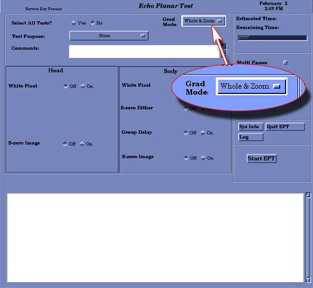

Illustration 7: Echo Planar Test Window

Illustration 7: Echo Planar Test Window
For TwinSpeed, the GradMode option displays with three possible entries, (see Illustration 8).
Illustration 8: Echo Planar Test Window with GradMode Option

| NOTE: | The Select All Tests default option is No. |